Bayesian Gaussian Basis Regression
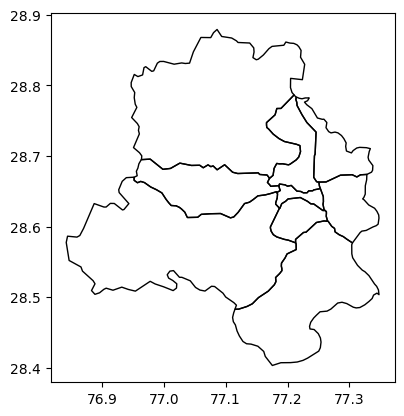
A guide to download low-cost sensor data from OpenAQ
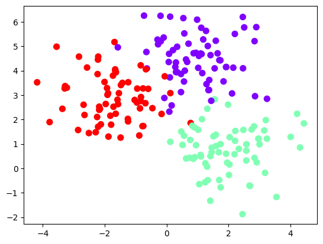
Multi-class GP classification with different strategies
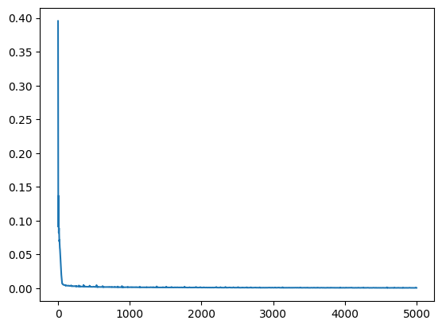
Exploring the use of GPs for climate modeling
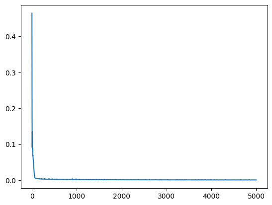
Exploring the use of SIRENs for climate modeling
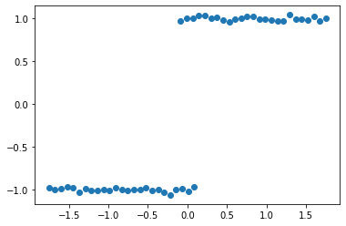
Exploring similarities between GNNs and GPs
Exploring basis functions
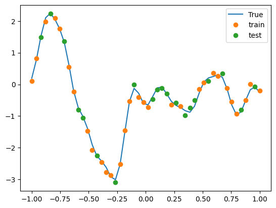
Challenges in using GNNs for regression using various strategies
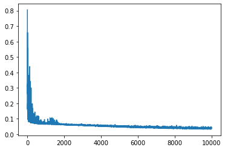
Extreme Image Interpolation with Conditional Neural processes
A tiny handbook to setup passwordless ssh in MacOS
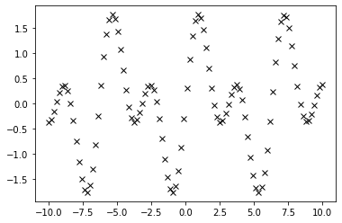
Challenges in fitting to a combination of sine waves
Exploring NTK kernels + GPJax with toy datasets
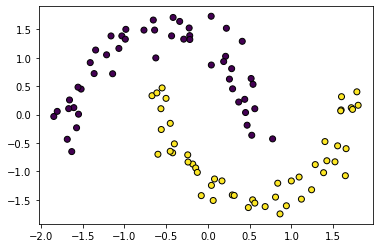
A practical implementation of Hensman et al. 2015 from scratch in JAX
Exploring MOGPs from scratch
End-to-end math derivations for Gaussian process regression and classification
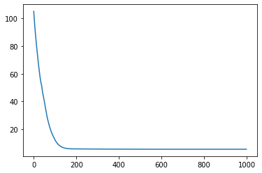
Exploring KFAC-Laplace approximation on simple problems in JAX
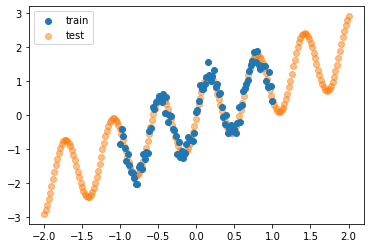
Implementing conditional neural processes from scratch in JAX
Pros and cons of several jax optimizers.
Get contributors’ list using GitHub API and pandas
Implementation of IRLS from Probabilistic ML book of Dr. Kevin Murphy and its comparison with naive second order implementation.
Most used commands while working with gcloud
This is a collection of FAQs/road-blocks/queries/issues I had over the past 2 years of engagement with GitHub.
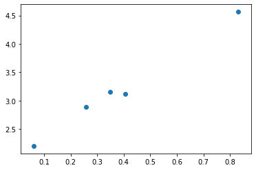
Practical and direct introduction to PyTorch
A video lecture series from Prof. Philipp Hennig
Review of PhD thesis of Dr. Yarin Gal
PyTorch zen tips
Conference Presentation Tips
A basic comparison among GPy, GPyTorch and TinyGP
A programming introduction to QBC with Random Forest Classifier.
Understanding KL divergence
Where .py files are better than .ipynb files?
A last-minute help list
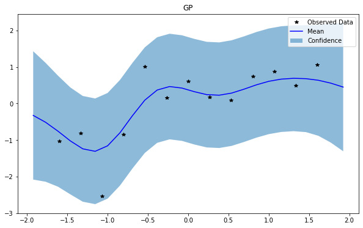
An idea of input warping GPs
A simple demo of sparse regression in stheno with VFE and FITC methods.
Most used command while working with Docker
Apply constraints in GPy, GPFlow, GPyTorch
An exploratory analysis of kernels in GPs
Programatically download OpenAQ data
A programming introduction to Active Learning with Bayesian Linear Regression.